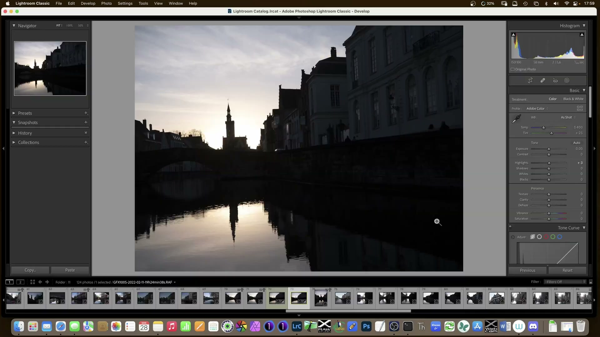
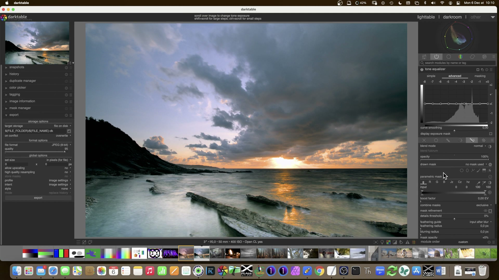
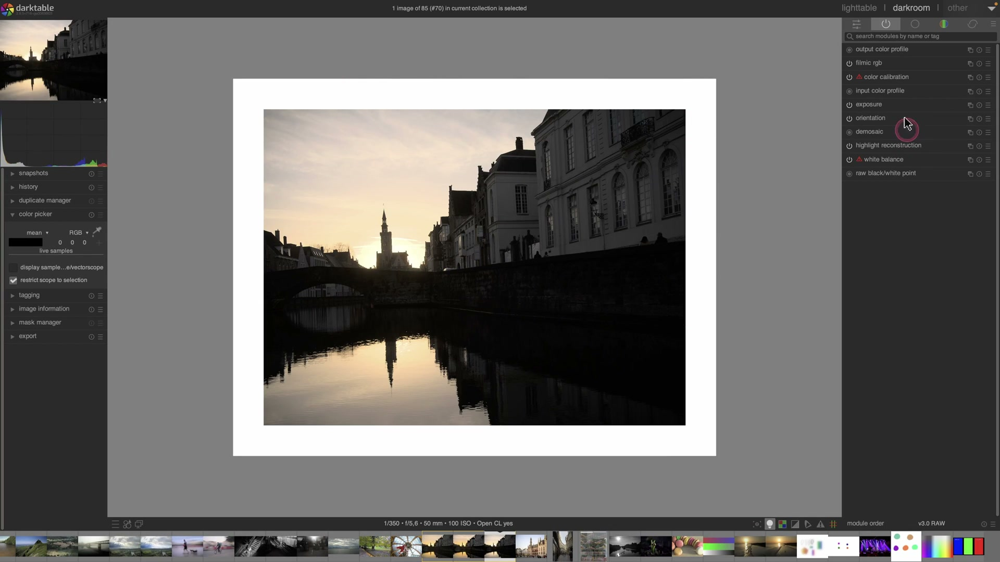
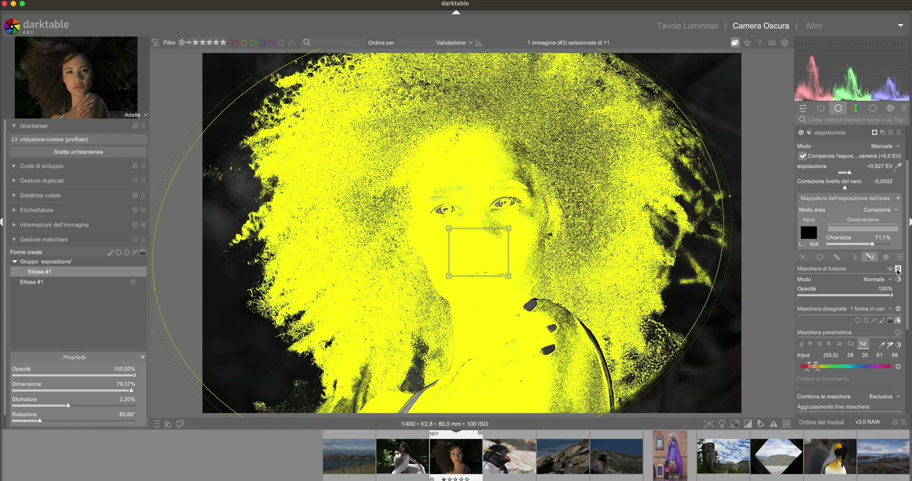
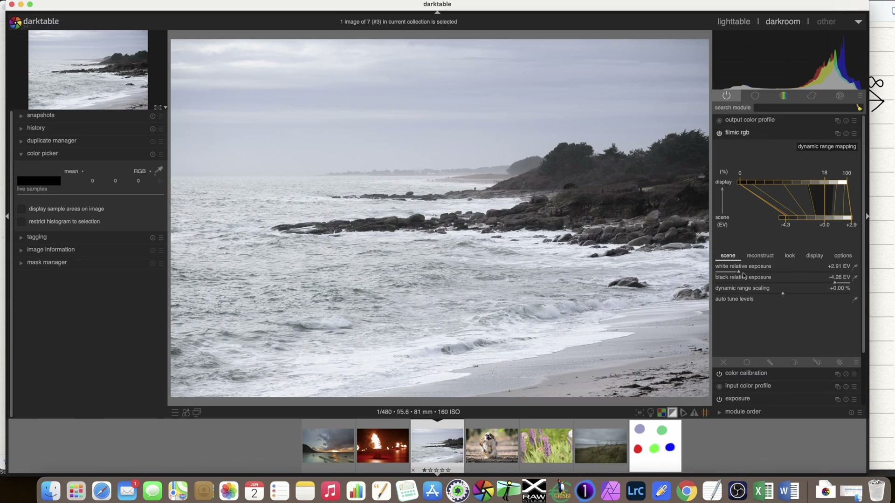
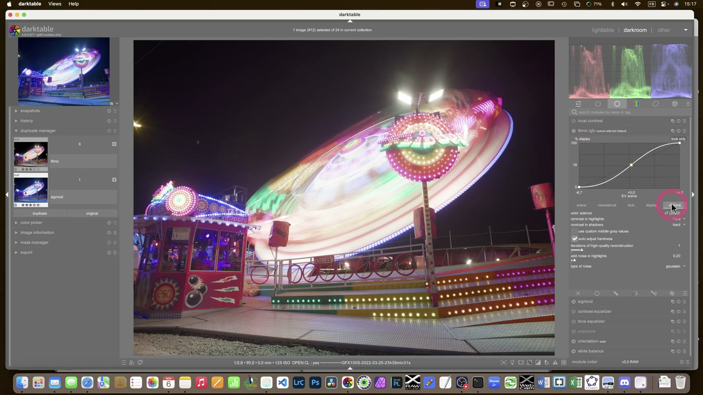

Migrazione da Lightroom a darktable: Workshop pratico¶
Questo workshop guida passo-passo un utente proveniente da Lightroom nell’elaborazione di una fotografia RAW in darktable 5.4+, replicando un flusso tipico di sviluppo Lightroom-style — ma rispettando l’architettura tecnica e la filosofia di darktable: scene-referred, non-destructive, modulare e controllabile1. Non si tratta di “fare come Lightroom”, ma di tradurre il proprio linguaggio creativo in un sistema più profondo, meno opaco e completamente aperto14.

darktable ≠ clone gratuito
darktable non è un “Lightroom open source”: è un sistema di elaborazione basato su modelli fisici della luce (RGB lineare, scene-referred), mentre Lightroom opera in spazio gamma-encodato e con curve predefinite indesiderabili1. Questa differenza fondamentale implica che non esiste un mapping 1:1 tra i moduli, ma solo equivalenze funzionali.
Panoramica del workflow¶
Il flusso qui descritto è stato testato su una foto RAW Canon EOS R6 (CR3) e replica un classico sviluppo Lightroom:
Esposizione → Bilanciamento colore → Dettagli → Correzioni geometriche → Stile finale.
Ogni modulo è posizionato nella pipeline in ordine ottimale per preservare la qualità e il controllo2.
1. raw overexposure compensation (se necessario)
2. exposure
3. white balance
4. color calibration (primaries tab)
5. tone curve
6. sharpening
7. denoise (profiled)
8. lens correction
9. vignetting
10. color balance rgb
⚠️ Attenzione: In darktable, i moduli agiscono in sequenza rigida. L’ordine conta: ad esempio,
sharpeningdeve venire prima didenoise, altrimenti il rumore viene accentuato4.
Passo 1: Apertura e prima valutazione¶
Apri l’immagine RAW in darktable:
→ Seleziona la foto nella lighttable
→ Premi D per entrare in darkroom
→ Attiva la visualizzazione dell’istogramma (Ctrl+H)

Osserva:
- L’istogramma mostra una distribuzione asimmetrica? (es. pila a sinistra = sottoesposta)
- Il picco rosso/blu è fuori scala? → indica sbilanciamento cromatico o clipping
- La preview mostra artefatti? (bande, frange cromatiche, macchie) → richiederà correzioni specifiche
Prima regola: non toccare nulla subito
darktable applica già un profilo di ingresso e una curva base. Prima di modificare, premi R per reimpostare tutti i moduli attivi — così parti da uno stato pulito e coerente2.
Passo 2: Esposizione globale (exposure)¶
In Lightroom: Basic > Exposure
In darktable: modulo exposure, scheda Exposure
| Parametro | Valore tipico | Perché |
|---|---|---|
| Exposure compensation | +0.30 a +1.20 EV | Compensa sottoesposizione misurata dal sensore; usa la pipetta sul grigio neutro (18%) per calibrare4 |
| Black level | -0.05 a -0.25 | Recupera dettagli nelle ombre profonde senza appiattirle; evita valori < -0.30 (rischio banding) |
| White point | 0.98–0.995 | Imposta il punto di bianco massimo senza clipping; verifica con O (overexposure overlay) |
✅ Cosa osservare:
- Attiva O: le zone in rosso sono clippate (luminanza > 1.0).
- Se il rosso appare su cieli o luci speculari, riduci Exposure compensation.
- Se non appare mai, l’immagine è probabilmente sottoesposta.

Passo 3: Bilanciamento del bianco (white balance)¶
In Lightroom: Basic > Temp/Tint
In darktable: modulo white balance, scheda White balance
| Parametro | Valore tipico | Perché |
|---|---|---|
| Temperature | 4500–6500 K | Usa la pipetta su una zona neutra (pavimento, muro, carta grigia); evita superfici riflesse o illuminate da fonti miste4 |
| Tint | -5 a +10 | Corregge dominanti verdi/magenta; valori estremi (> ±15) indicano problemi di illuminazione o profilo errato |
⚠️ Attenzione: white balance agisce prima di color calibration. Se usi profili custom (es. DCP), applicali prima di questo modulo9.
Passo 4: Gestione del colore (color calibration)¶
In Lightroom: Basic > Vibrance/Saturation + HSL
In darktable: modulo color calibration, scheda Primaries
| Parametro | Valore tipico | Perché |
|---|---|---|
| Red/Green/Blue saturation | +10% a +30% | Aumenta vividezza senza alterare l’equilibrio cromatico globale (meglio di vibrance)8 |
| Red/Green/Blue hue shift | -3° a +3° | Corregge sfumature imprecise (es. rossi troppo aranciati, blu troppo violacei) |
| Gamut compression | 85–95% | Previene il clipping cromatico nelle alte luci; valore 90% è sicuro per la maggior parte delle immagini5 |
✅ Cosa osservare:
- Abilita gamut warning (icona occhio): le aree gialle indicano colori fuori gamut sRGB.
- Se compaiono molti gialli dopo saturation, abbassa gamut compression.

Passo 5: Curva tonale (tone curve)¶
In Lightroom: Tone Curve > Parametric o Point Curve
In darktable: modulo tone curve, scheda Tone curve
Usa la modalità point curve, non parametric (più precisa e simile a Lightroom)2:
| Punto | Coordinata (x,y) | Funzione |
|---|---|---|
| Nero | (0.00, 0.00) | Fissa il punto nero assoluto |
| Ombre | (0.15, 0.12) | Alza leggermente per aprire le ombre |
| Mezzitoni | (0.50, 0.48) | Leggera S-curve per contrasto naturale |
| Luci | (0.85, 0.82) | Controlla compressione luci senza desaturare |
| Bianco | (1.00, 1.00) | Fissa il punto bianco assoluto |
✅ Cosa osservare:
- La curva deve essere sempre monotona crescente (nessun “gobbo”).
- Se la curva scende, hai invertito i punti → premi Reset curve.

Passo 6: Nitidezza e rumore (sharpening + denoise (profiled))¶
In Lightroom: Detail > Sharpening + Noise Reduction
In darktable: due moduli separati, in ordine rigoroso:
sharpening (prima del rumore)¶
| Parametro | Valore tipico | Perché |
|---|---|---|
| Amount | 45–70 | Valore sufficiente per sensori moderni (R6, A7IV, Z6II) |
| Radius | 0.9–1.3 | Evita effetti “halo”; >1.5 genera artefatti sui bordi |
| Threshold | 15–25 | Ignora il rumore nelle zone omogenee (cielo, pelle) |
denoise (profiled) (dopo il sharpening)¶
| Parametro | Valore tipico | Perché |
|---|---|---|
| Strength | 25–45 | Regola in base all’ISO: ISO 100 → 25, ISO 3200 → 45 |
| Spatial detail | 20–35 | Preserva texture fine (capelli, tessuti) |
| Range detail | 15–25 | Controlla rumore cromatico (macchie rosse/verdi) |
⚠️ Attenzione: denoise (non-local means) è più aggressivo e meno preciso — evitalo per lavori professionali5.
Passo 7: Correzioni geometriche (lens correction + vignetting)¶
In Lightroom: Lens Corrections > Profile + Manual
In darktable:
lens correction¶
- Abilita Enable distortion correction, Enable chromatic aberration correction, Enable vignetting correction
- Seleziona il profilo corretto (es.
Canon RF 24-105mm f/4L IS USM) - Se il profilo manca: usa
manual→Distortion(-5 a +10),Multiplier(0.95–1.05)
vignetting¶
| Parametro | Valore tipico | Perché |
|---|---|---|
| Strength | -15 a -40 | Compensa vignettatura ottica (valore negativo = attenuazione) |
| Scale | 50–70 | Controlla l’estensione radiale della correzione |
| Center X/Y | 0.00 / 0.00 | Allinea al centro ottico (modifica solo se l’immagine è fortemente decentrata) |
✅ Cosa osservare:
- Attiva preview grid (icona griglia): ti aiuta a valutare distorsione e vignettatura6.
Passo 8: Stile finale (color balance rgb)¶
In Lightroom: Split Toning o Calibration
In darktable: modulo color balance rgb, scheda Global
| Parametro | Valore tipico | Perché |
|---|---|---|
| Shadows hue/saturation | 210° / +15% | Aggiunge un tocco freddo alle ombre (blu-ciano) |
| Midtones hue/saturation | 0° / +5% | Neutralità con leggera saturazione |
| Highlights hue/saturation | 30° / +10% | Tono caldo alle luci (giallo-ambra) |
| Global saturation | +5% a +12% | “Pop” finale senza artificiosità |
✅ Consiglio avanzato:
Per un look “cinematografico”, abilita Chroma blend mode → LCh e usa chroma invece di saturation per un controllo più fisiologico del colore7.
Consigli operativi chiave¶
- Non usare mai
base curveper lo sviluppo: è deprecata in darktable 5.4+ e interferisce con AGX11. Usatone curveoAGXal suo posto. - I profili DCP non sono equivalenti a quelli Lightroom: i profili Canon/Nikon in darktable sono generati da
dcrawe possono differire. Usacolor calibrationper affinamenti locali1. - I preset Lightroom (.xmp) NON sono importabili: darktable usa
.dtstyle. Converti manualmente o usa strumenti esterni comelr2dt7. - La gestione dei cataloghi è diversa: darktable non ha “cataloghi” nel senso Lightroom. Usa cartelle fisiche + metadati XMP embedded3.
- Per il tethering: darktable supporta USB tethering nativo (Canon/Nikon/Sony), ma senza anteprima live: la foto appare solo dopo lo scatto10.
Riferimenti visuali¶

Filmic RGB · frame a 1095s da video YouTubeRisorse utili¶
- 📹 Video tutorial “De Lightroom à darktable” (OuiOuiPhoto, 5 parti) — workflow completo passo-passo37
- 📹 “Faire comme Lightroom mais avec darktable” (David LaCivita) — confronto diretto risultati9
- 📚 Guida ufficiale darktable 5.4 (inglese) — riferimento tecnico completo12
- 🛠️ darktable-fr.org — tutorial in francese con esempi pratici e traduzioni13
Fonti¶
-
darktable.fr, "darktable n'est pas le clone gratuit de Lightroom" ↩↩↩
-
darktable.fr, "Suivre les tutoriels Lightroom avec darktable" ↩↩↩
-
darktable.fr, "De Lightroom à darktable 01 – Importation et tri" ↩↩
-
darktable.fr, "De Lightroom à darktable 02 – Développement lightroom" ↩↩↩
-
darktable.fr, "De Lightroom à darktable 03 – Développement Photoshop" ↩↩
-
darktable.fr, "De Lightroom à darktable 04 - Autres fonctions" ↩
-
darktable.fr, "De Lightroom à darktable 05 - Migration et conclusion" ↩↩↩
-
darktable.fr, "Comment changer les couleurs... comme avec Lightroom" ↩
-
darktable.fr, "Faire comme Lightroom mais avec darktable" ↩↩
-
darktable.fr, "Tethering avec darktable" ↩
-
darktable.org, "Release Notes darktable 5.4" ↩
-
darktable.org, "User Manual – AGX module" ↩
-
darktable.fr, community francese di darktable, https://darktable.fr ↩
-
darktable.fr, serie "De Lightroom à darktable", https://darktable.fr/posts/2018/02/de-lightroom-a-darktable-01-importation-et-tri/ ↩